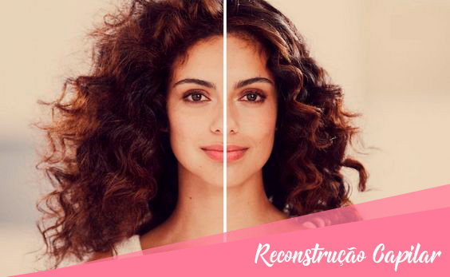

COMO CUIDAR DOS CABELOS CACHEADOS
Os cabelos cacheados estão ganhando muito espaço dentro do mundo da beleza e da moda feminina! Além disso...
Leia maisRECONSTRUÇÃO CAPILAR: VOCÊ SABE O QUE É?
A reconstrução capilar é um tratamento que ajuda a recuperar a naturalidade dos fios, deixando...
Leia mais7 DICAS MATADORAS PARA CUIDAR DOS CABELOS CACHEADOS

Depois de muito tempo buscando fórmulas e maneiras para alisar os cabelos, a tendência agora...
Leia maisCABELOS NA PRAIA? ACOMPANHE NOSSAS DICAS DE CUIDADO

As cacheadas sabem bem que vento, sol e água salgada não são exatamente os melhores amigos das madeixas...
Leia maisCOMO SABER QUAL O MEU TIPO DE CACHO?

Como já é sabido, existem vários tipos de cachos, mas muitas pessoas não sabem identificar qual o seu tipo...
Leia maisPIXIECURL: O CORTE ANTIGO “JOÃOZINHO” – INSPIRAÇÕES E CUIDADOS

Já fazia um tempinho que tava bem cansada do meu cabelo. Não tenho uma rotina corrida...
Leia mais